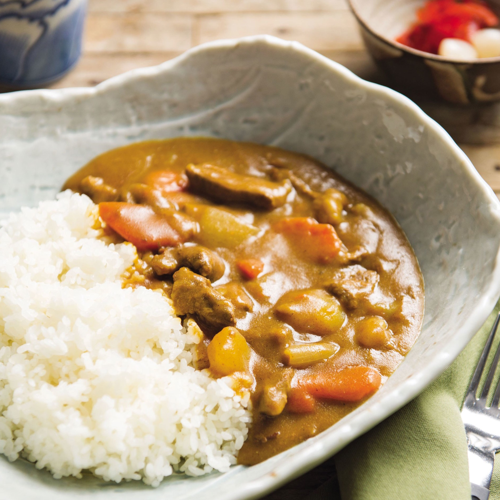
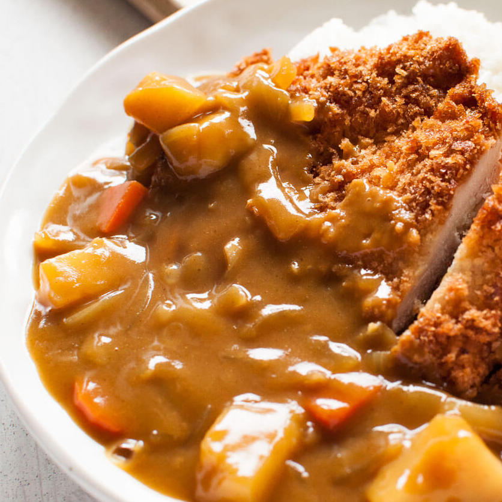
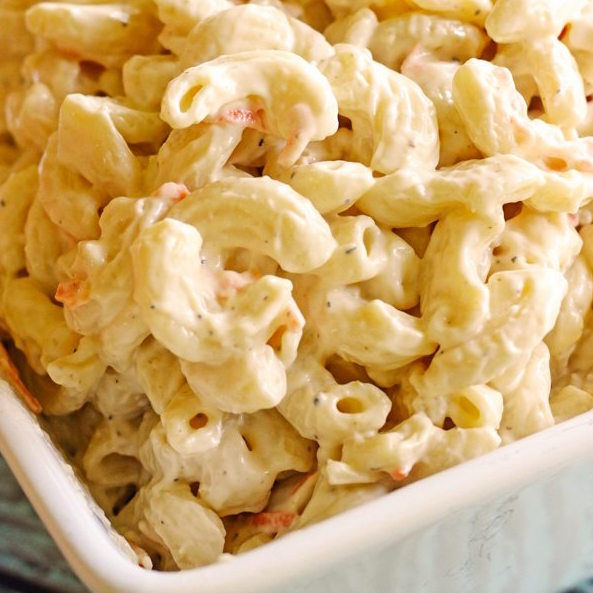
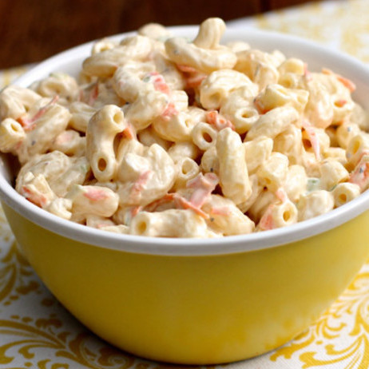
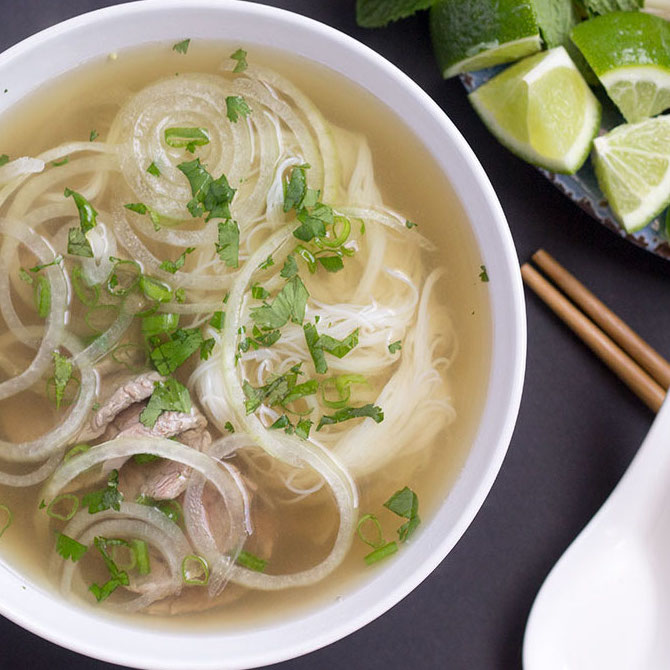
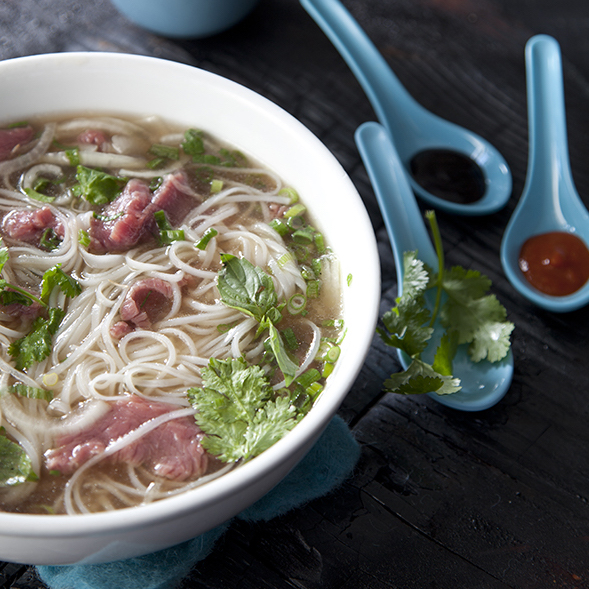
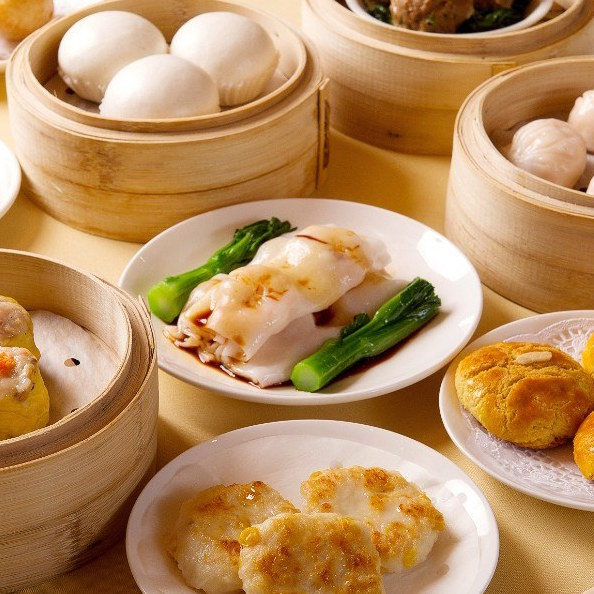
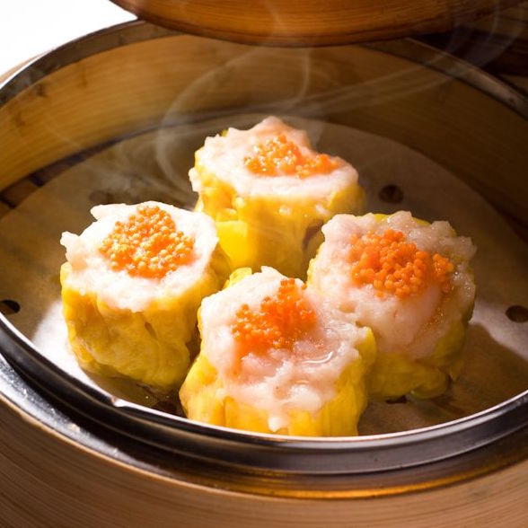
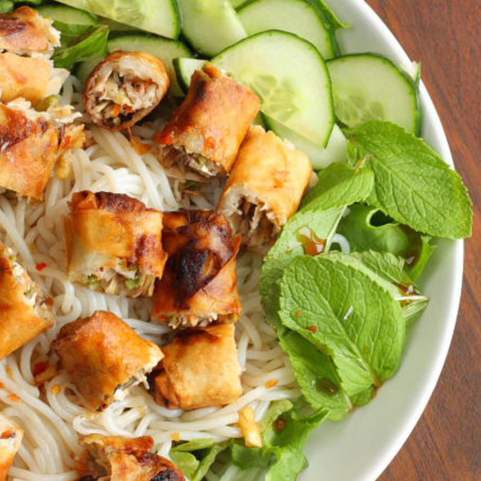
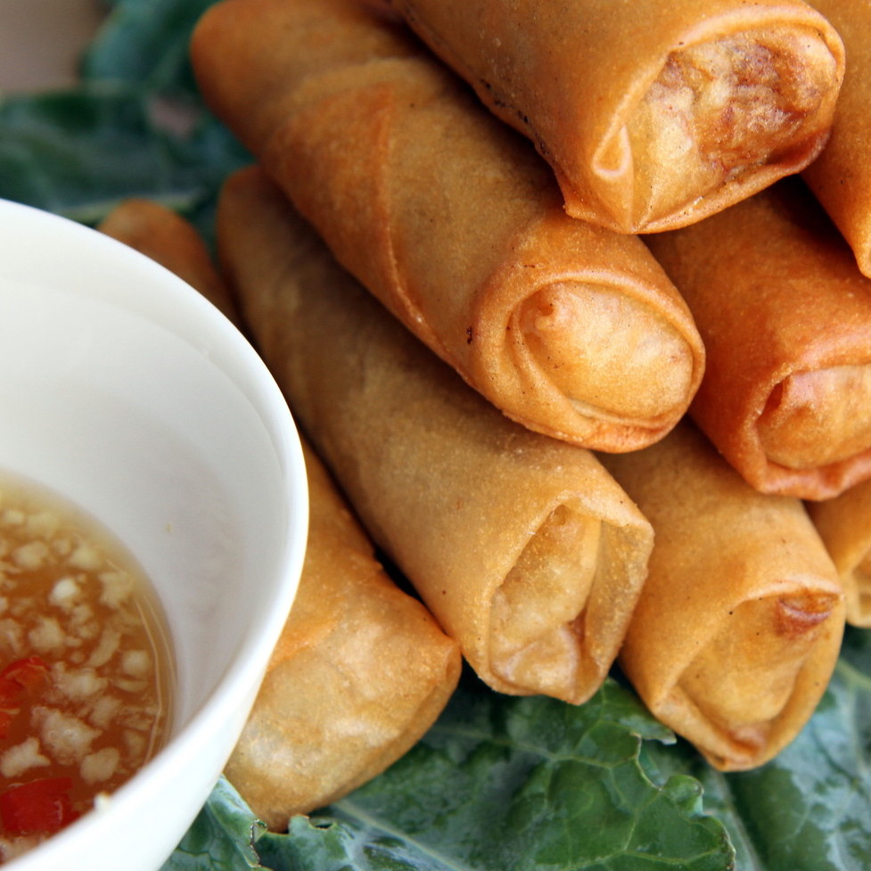

A wide variety of vegetables and meats are used to make Japanese curry. The basic vegetables are onions, carrots, and potatoes. For the meat, beef, pork, and chicken are the most popular. Katsu-karē is a breaded deep-fried cutlet (usually pork or chicken) with curry sauce.
INGREDIENTS
1 pack S&B Golden Curry Sauce
2 cups minced onion
1 cup chopped potatoes
1/2 cup chopped carrots
1 lb chopped chicken
1 tbsp vegetable oil
540 ml water
INSTRUCTIONS
Stir-fry meat and vegetables with oil in large skillet on medium heat for approx. 5 minutes.
Add water and bring it to a boil. Reduce the heat, cover, and simmer until the ingredients are tender. Approx. 15 minutes.
Turn the heat off, break S&B Golden Curry Sauce Mix into pieces and add them to the skillet. Stir until sauce mixes are completely melted. Simmer approx. 5 minutes, stirring constantly.
Serve over rice!
Dish Difficulty: 30%
COLLEEN DUONG
"Delicious. Absolute favorite dish ever. Really easy to make at home as long as you have the right ingredients with you and you can make a large serving that can last you forever (if you have an appetite like mine). My favorite restaurants that sell Japanese curry are: Curry House and Taiyo, located in Honolulu, HI."
VIVIEN CHEN
"I am constantly being dragged to eat Japanese Curry with Colleen and I do love curry too, but just not as much as she does. I also like to go to Curry House for mapo tofu curry. That stuff is good 10/10 quality I must say. "
HAWAIIAN MACARONI


Authentic Hawaiian macaroni salad is delicious. In its simplicity, it has achieved something near perfection. That wonderful scoop of creamy pasta is amazing without a dense amount of extra ingredients. Hard to come by unless you're actually in Hawaii, but oh so good.
INGREDIENTS
1lb elbow macaroni, uncooked
2 carrots shredded
1/4 cup onion (shredded)
1/4 cup milk
2 1/2 cup best foods or hellman's mayonnaise
2 tbsp apple cider vinegar
2 tbsp sugar
INSTRUCTIONS
Cooking macaroni according to the package directions. Drain well and place macaroni in a large bowl.
While macaroni is still hot, sprinkle on vinegar and add carrots and onions. Toss together until well combined. Allow to cool for about 10-15 minutes.
In a separate, smaller bowl, whisk together mayo, milk, and sugar. Fold mayo mixture into the macaroni until all the noodles are evenly coated. Add salt and pepper to taste.
Cover and refrigerate for at least 4 hours (best overnight!). Gently stir before serving, adding a little more milk if needed (no more than a tablespoon or two).
Dish Difficulty: 15%
COLLEEN DUONG
"My true love besides curry will always be hawaiian macaroni. I could literally eat an entire tub of this (which is terrible for my health). I always come back home, immediately heading straight to Zippy's for some of their hawaiian macaroni. It's a blessing to this world."
JATHRYN RACASA
"Colleen constantly talks about hawaiian macaroni and how much she misses it. I also enjoy eating hawaiian macaroni at Zippy's when I am dragged there by Colleen. That's some quality stuff I must say."
PHO


A Vietnamese soup consisting of broth, rice noodles called bánh phở, a few herbs, and meat, primarily made with either beef (phở bò) or chicken (phở gà). Pho is a popular street food in Vietnam and the specialty of a number of restaurant chains around the world.
INGREDIENTS
2 large onions, split in half
1 large hand ginger (about 6 inches long), split in half
3 pounds beef shin, with meat attached
2 lb of oxtail, cut into 1/2 to 1-inch thick slices
1 lb boneless beef chuck
1 lb beef brisket
3 whole star anise pods
1 cinnamon stick
1 tbsp fennel seeds
4 cloves
1 tbsp coriander seeds
1/4 cup fish sauce
2 tbsp sugar
Kosher salt
6 to 8 servings pho noodles
1 lb beef flank steak, sliced thinly against the grain
2 to 3 cups mixed herbs (cilantro, basil, and mint)
2 to 3 cups trimmed bean sprouts
1/2 cup sliced scallions
2 limes, each cut into 4 wedges
hoison sauce and siracha
INSTRUCTIONS
Place a wire cooling rack or grill grate directly over the flame of a gas burner set on high. Place onions and ginger on top and cook, turning occasionally, until deeply blackened on all sides, about 10 minutes total. Alternatively, Adjust rack to 3 to 4 inches from broiler element and preheat broiler to high. Place onions and ginger on a foil-lined broiler tray. Broil, turning occasionally, until charred on all surfaces, about 25 minutes total. Set aside.
Meanwhile, combine beef shins, oxtail, chuck, and brisket in a large stockpot. Cover with cool water. Bring to a boil over high heat. Boil for 15 minutes, then dump water and meat into sink. When cool enough to handle, rince parts under cool running tap water, carefully scrubbing debris from off of any bones and out of cracks in the meat, then return them to the pot. Cover with cool water.
Add charred onions, ginger, anise, cinnamon, fennel, cloves, coriander, fish sauce, sugar, and 1 tablespoon salt. Bring to a boil over high heat, reduce to a bare simmer, and cook, skimming occasionally, until brisket and chuck are tender but not falling apart, about 1 1/2 hours. Transfer brisket and chuck to a small bowl and cover with cold water. Refrigerate until ready to serve.
Continue simmering broth for a further 4 hours, topping up with water as necessary. Strain broth through a fine mesh strainer. If desired, pick meat and connective tissue from oxtails and beef shins. Discard bones and aromatics. You should end up with about 4 quarts broth. Dilute with water or reduce as necessary to reach 4 quarts. Keep hot.
Carefully skim fat off of surface of broth and discard. Season broth to taste with additional fish sauce, salt, and/or sugar. It should be highly seasoned. Slice cooked beef into thin slices or rough chunks.
Prepare pho noodles according to package directions. To serve, place re-hydrated noodles in individual noodle bowls. Pour hot broth over noodles. Serve immediately, allowing guests to top with cooked meat and slices of raw flank steak, herbs, aromatics, lime, and sauce as they wish.
Dish Difficulty: 90%
COLLEEN DUONG
"I grew up eating pho because my ethnic background. I absolutely love it, especially my mother's Pho. It gives me nostalgia everytime I even smell it in the air. When I go home during the breaks I always make sure to at least eat a couple bowls of pho because it is always a must. I don't eat it with siracha though because I cannot handle spicy foods, but I do love eating the bean sprouts with hoison sauce like french fries and ketchup."
VIVIEN CHEN
"I enjoy eating pho. A very good cuisine to have and a very good savory food, tbh. There are a good amount of quality pho restaurants in Hawaii."
JATHRYN RACASA
"Pho is always a good time. I like eating it, a very quality Vietnamese meal."
LILY DUONG
"I am Colleen's mother and I enjoy eating pho (not as much as my daughter). It is always an easy meal to prep if I buy the noodles and meats from a restaurant. It can also be pretty cheap depending on where you are. In Hawaii it definitely is not cheap, but it's an affordable amount in Seattle, especially considering how much they will give you."
PORK AND SHRIMP SIU MAI / DIM SUM


A style of Chinese cuisine prepared as small bite-sized portions of food served in small steamer baskets or on small plates. Dim sum dishes are usually served with tea and together form a full tea brunch. Dim sum traditionally are served as fully cooked, ready-to-serve dishes. Siu Mai is a type of traditional Chinese dumpling, originating from Hohhot, Inner Mongolia. In Cantonese cuisine, it is usually served as a dim sum snack.
INGREDIENTS
1/2 package wonton wrappers, round
1/2 pound ground pork
1/2 pound shrimp, deveined and finely chopped
1 tbsp soy sauce
1 tsp grated ginger
1 tsp sesame oil
1/2 tsp salt
1/4 tsp black pepper
1 egg, beaten, for egg wash
Garnish: 1 small quarter of carrot, minced
INSTRUCTIONS
In a medium-sized bowl, mix together the pork, shrimp, soy sauce, ginger, sesame oil, salt, and pepper.
Spoon a heaping teaspoon of the filling into the center of a wonton wrapper. Lightly brush the sides of the wrapper with egg wash. Squeeze the sides up until the wrapper forms a cup, tucking in the sides and leaving the filling exposed on top. Repeat with the rest of the wrappers. Garnish with orange roe or chopped carrots.
Line 1 or 2 large bamboo steamer with parchment paper. Fit the steamer basket(s) in the wok and pour enough water into the wok until the water line is 1 inch below the bottom of the steamer. Steam the siu mai for 12 to 15 minutes, until filling is firm to the touch. Serve with soy sauce, chili sauce, or chili oil.
Dish Difficulty: 40%
COLLEEN DUONG
"I love shumai. I absolutely love it. I remember my mother, father, grandma, aunty buying it for me from Chinatown and it was just my absolute favorite thing. Don't get me wrong, I love dimsum in general and all the foods that come with dimsum, but if I can get my hands on some shumai I'm going to do it. The best dimsum I've ever had was from Vancouver, Canada. I want to go back for another round."
BRENDA DUONG
"I don't know about shumai, but I can second Colleen's comment about the dimsum from Canada being fantastic."
SPRING ROLLS


Chả giò is a popular dish in Vietnamese cuisine and usually served as an appetizer in Europe and North America, where there are large Vietnamese communities. It is ground meat, usually pork, wrapped in rice paper and deep-fried.
INGREDIENTS
This recipe makes about 30 spring rolls
Menlo Brand All Purpose Wrappers
2 lb ground pork
1/2 cup dried black fungus (wood ear mushrooms), minced
2 stalks of green onions, sliced
1 small white onion, diced
1 tsp granulated white sugar
1/4 tsp pepper
1/4 tsp salt
2 tbsn oyster sauce
1 large egg yolk to seal the wrapped, whisked
Vegetable oil for frying
Vietnamese Dipping Fish Sauce
INSTRUCTIONS
To begin, soak the dried mushrooms and vermicelli noodles in warm water for 30 minutes. Drain, rinse and squeeze out excess water. Chop into small segments and set aside.
Thaw out the wrappers. Then separate them into individually sheets. Be patient and pull apart each sheet slowly to prevent tearing.
Mix together the ground pork, chopped mushrooms and vermicelli noodles, green onions, white onion, sugar, pepper, salt and oyster sauce.
Begin assembling
In a pot, bring vegetable oil to a temperature of 325 F degrees. If you don't have thermometer, you can test the temperature by dropping a small piece of the wrapper into the oil. If it starts sizzling with bubbles around the wrapper, then it's ready. If it immediately burns the wrapper, then it's too hot so lower the temperature.
Cooking in small batches, deep fry the egg rolls for 5-10 minutes. The cooking time will vary depending on the size of your egg rolls. If it's on the small side, it will require less cooking time. If it's on the big size, it will require a bit more cooking time.
Helpful Cooking Tip: Remove the egg rolls from the oil before it gets to the desired shade of brown. Residual cooking will continue to brown the egg rolls after they are removed from the oil. I always remove the egg rolls when it's a very light brown.
Remove the egg rolls from the oil with a slotted spoon and drain on a paper-lined plate.
Serve with the prepared fish sauce as a dipping sauce. You can eat the egg rolls by itself or wrapped with lettuce and assorted Vietnamese herbs such as sorrel (rau chua), fish mint (diep ca), Vietnamese coriander (rau ram), and perilla (tia to).
Dish Difficulty: 40%
COLLEEN DUONG
"Another nostalgia-ride food that my mother used to make for me all the time. She makes the BEST chả giò. I could eat so many of them. My favorite is when they're cut up and made into Bun Chả Giò Chay, which is basically just white round noodles and some sauce (not sure what the sauce is specifically) and with lettuce. Oh that's the good stuff."
BRENDA DUONG
"I also agree that Bun Chả Giò Chay is a great way to eat Chả Giò."
LILY DUONG
"I make them a lot for my daughters and it does take quite a while to make them since you have to mass produce them, but you can fold them up while watching your favorite dramas on tv since it's just a repetitive action."